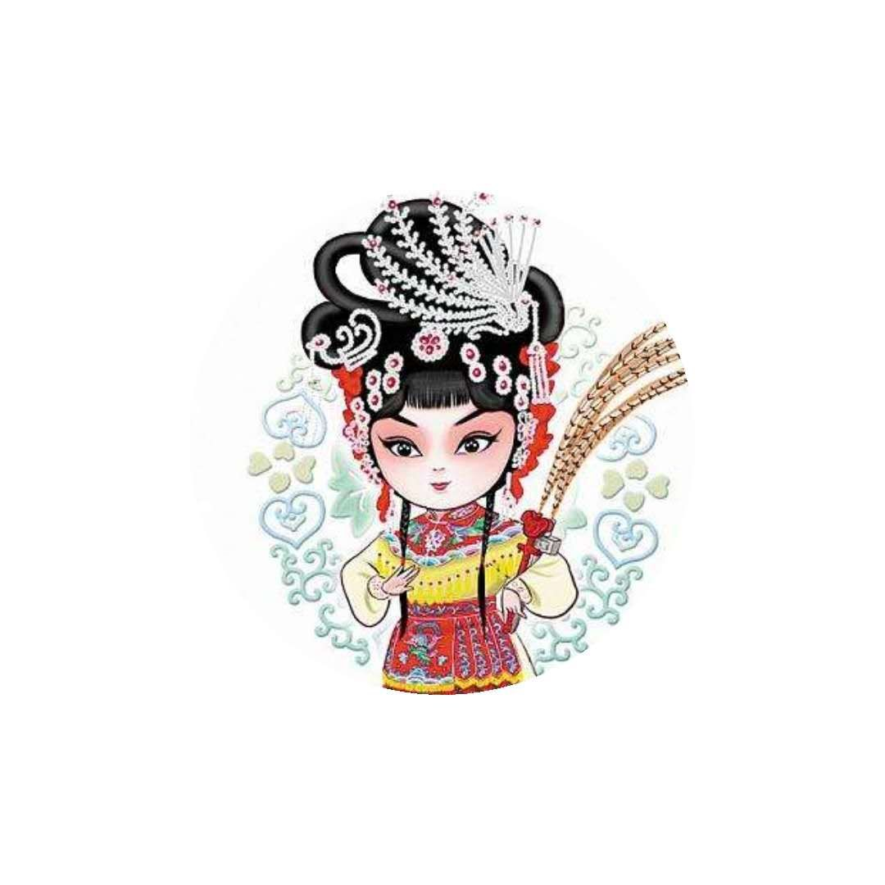

江南丝竹本来便是凝水的声色和精灵，在江南众多的戏剧里，这样的声色和精灵怕以越剧为最。总思量江南地域里众多越剧的舞台常离不了水，或依偎于河边，或矗立于水中。这样的以水为伴，固然有江南水乡水路便捷的因素，但细细地想来，当委婉的唱腔贴着水面活泼泼地渡向四邻八乡，当飘飘的水袖袭着水波妖娆娆地叠出片片倒影，甚至当娇嗔的眼波借着水光的映衬湿漉漉地愈见鲜亮，那份极至的柔美和水灵，又岂是远水的舞台所能比拟？所能打量？
辉煌越剧

越剧 浙江越剧团的足迹遍及英国、法国、马来西亚、新加坡、泰国、日本等地，享誉海内外。在芬兰演出时，以一曲“蝴蝶恋人”（即《梁山伯与柷英台》）看得欧洲人如痴如醉，引得芬兰总统夫人潸然泪下.
越剧的孕育--落地唱书
越剧 1852年（清咸丰二年）嵊县西乡马塘村农民金其柄创“落地唱书”。落地唱书是浙江嵊县以马塘村为主一带流行的说唱形式，开始演变为在农村草台演出的戏曲形式，艺人初始均为是半农半艺的男性农民，故称男班。